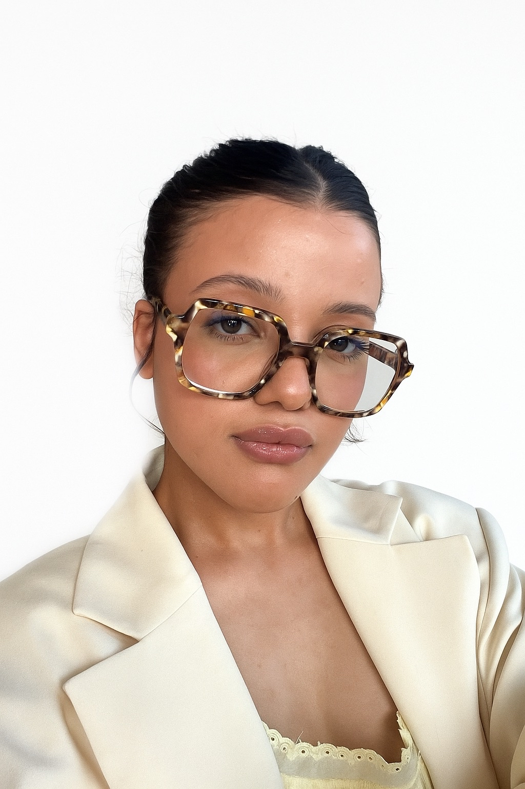
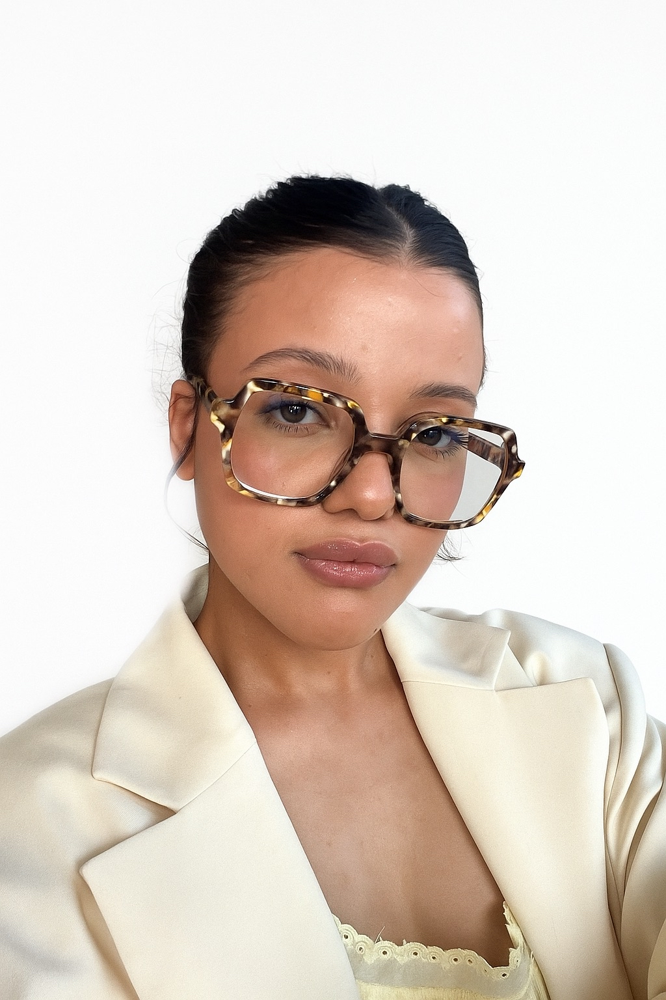
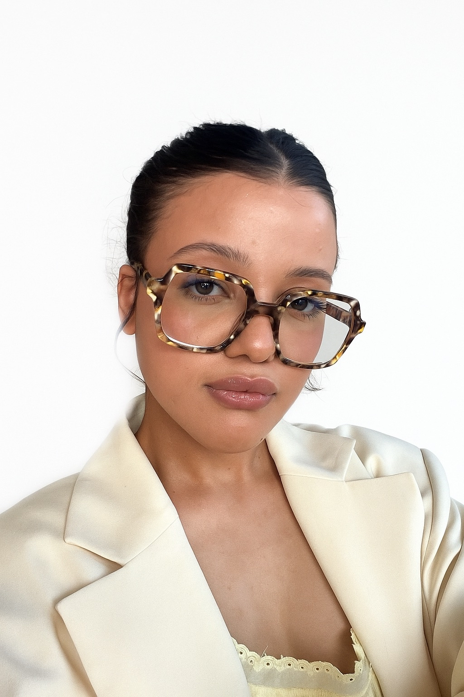
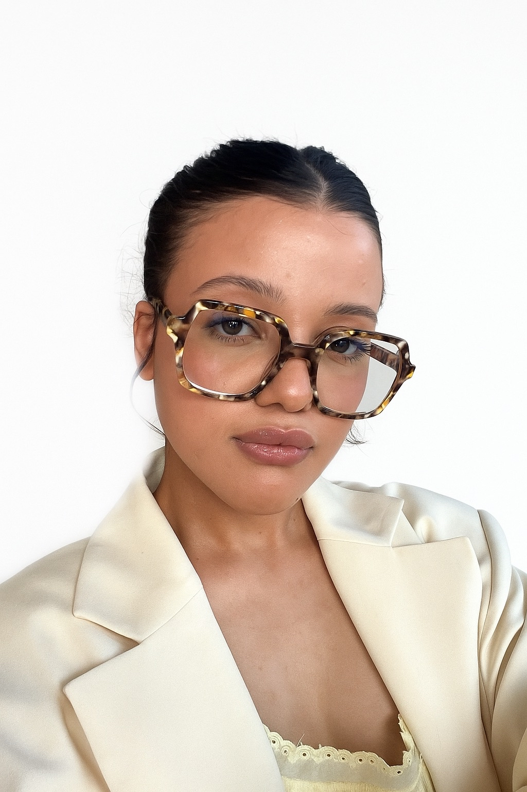

Samah Salhi
Étudiante en BUT Science des Données • IUT de Villetaneuse
 

 

Je suis étudiante en 2ème BUT Science des Données à l’IUT de Villetaneuse (Université Sorbonne Paris Nord). À l’origine, je pensais m’orienter vers un parcours en management logistique des transports. C’est mon professeur au lycée qui m’a conseillé le BUT Science des Données, estimant que cette formation correspondait davantage à mon profil.
En arrivant en BUT, j’ai dû m’adapter, notamment en mathématiques, car venant d’un bac STI2D, j’avais moins de bases théoriques que certains étudiants issus de filières générales. Les débuts ont demandé beaucoup de travail personnel, mais cette période m’a permis de développer mon autonomie et ma capacité d’adaptation.
J’aime particulièrement le travail d’analyse des données. J’apprécie le fait de partir de données brutes, de les nettoyer, de les structurer, puis de construire des graphiques pour en tirer des conclusions pertinentes.
Je souhaite devenir ingénieure ou spécialiste en intelligence artificielle, avec un intérêt particulier pour le machine learning et le traitement automatique du langage naturel (NLP).
Université Sorbonne Paris Nord
Lycée Raspail – Paris
J’utilise Python pour la manipulation et l’analyse de données.
Je sais :
Je maîtrise les bases de données relationnelles.
Je sais :
J’utilise R pour l’analyse statistique.
Je sais :
Je sais :